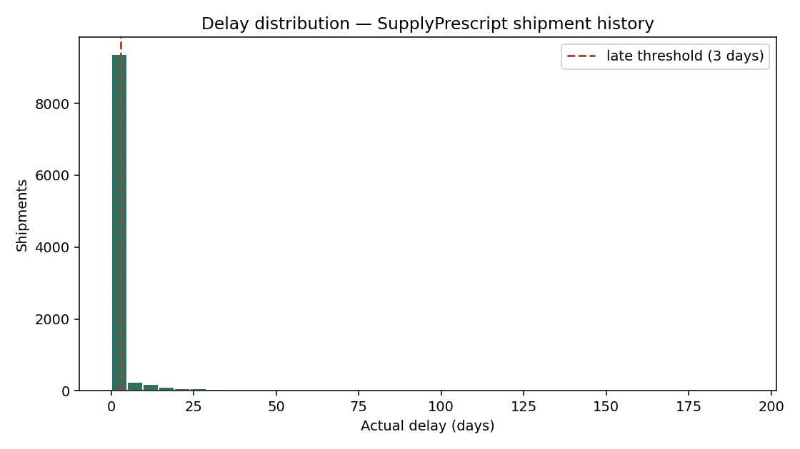
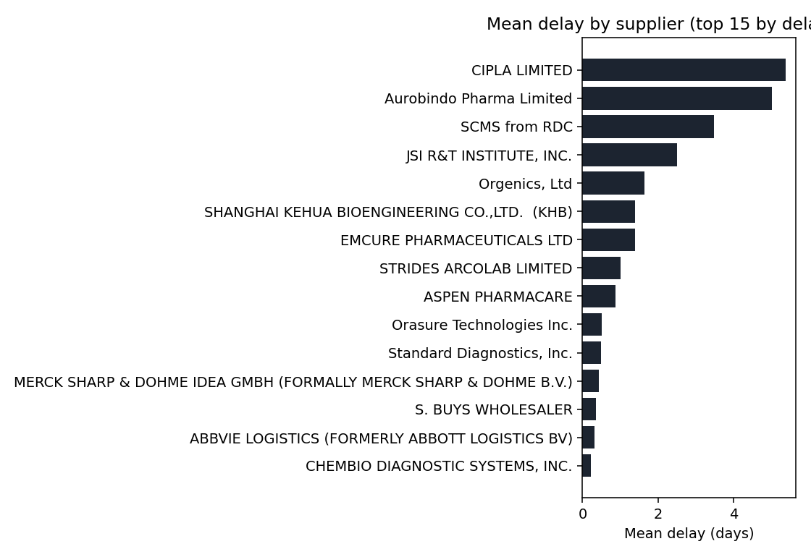
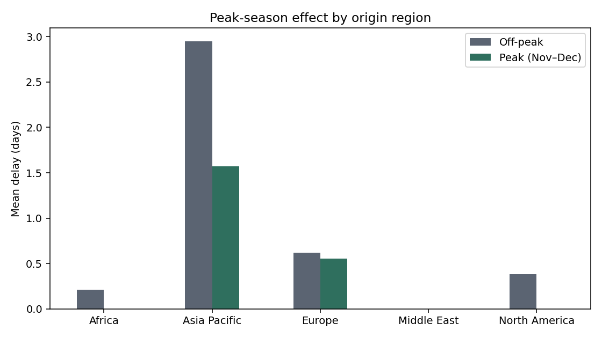

Axlero Solutions · Data Analytics · Project 3
Closed-loop analytics for supply-chain delays: predict the risk, prescribe the action, measure whether it worked, and retrain when the world changes.
Predictive → Prescriptive → Write-back → ROI → Continuous learning
Agenda
Why late shipments hurt — and why reacting too late is expensive.
The full closed loop in plain English.
Data → Model → Optimizer → API → Retrain.
Submit a shipment, pick an option, close the loop.
Metrics, tools, and what this proves.
Questions welcome at the end.
The problem
“A supply-chain team often learns a shipment will be late after it is already late.”
Expedite everything under panic — cost spikes.
Managers lack clear trade-offs: speed vs cost vs delay.
Outcomes are not fed back, so forecasts do not improve.
The solution
Will this shipment be late? By how many days?
What should we do? Four concrete options with cost & delay.
Prescriptive options
Fastest. Highest cost.
Medium cost / medium delay.
Cheapest. Accept the slip.
PuLP mixes A/B/C under budget & max delay.
Managers still choose — the system recommends, it does not auto-book freight.
Architecture
| Week | Component | Role |
|---|---|---|
| 1 | Mock data + EDA + XGBoost | Learn delay risk from history |
| 2 | Cost formulas + PuLP + UI | Turn prediction into options |
| 3 | FastAPI + decisions DB | Write-back, outcomes, ROI |
| 4 | Retrain trigger | If drift is high, refit the model |
Stack: Python · pandas · scikit-learn · XGBoost · PuLP · FastAPI · SQLAlchemy · SQLite/Postgres
Week 1 · Data
Week 1 · EDA


Left: delay distribution + 3-day late threshold. Right: mean delay by supplier.
Week 1 · Insight

Off-peak mean ~2.7 days vs peak ~5.5 days — so is_peak_season must be in the model.
Week 1 · Predictive model
Probability the delay is meaningful (> 3 days).
AUC ≈ 0.79
Expected delay in days.
MAE ≈ 1.87 days
Why both? “85% chance of a moderate delay” and “guaranteed 1-day slip” need different prescriptions.
Week 2 · Prescribe
Governance check in tests: full allocation, budget respected when feasible, delay ceiling held.
Week 3 · Closed loop
| Endpoint | What it does |
|---|---|
POST /prescribe | Prediction + 4 options |
POST /decisions | Write-back: save the human choice |
PATCH /decisions/{id}/outcome | Log actual cost & delay |
GET /decisions/roi | Predicted vs actual, on-budget rate |
Dashboard: http://127.0.0.1:8000/ui/
Week 4 · Continuous learning
Average |actual − predicted| cost across resolved decisions.
Default threshold: 15%
python week4/retrain.py
Point cron / GitHub Action at it weekly.
Honest scope: demo re-fits on shipment history; production would fold resolved decisions into training via a shipment FK.
Live demo
python week1/demo_model.py
Four scenarios: reliable → peak → risky → worst case.
http://127.0.0.1:8000/ui/
Click Demo A / B / C → Execute → Log outcome → ROI.
Script: docs/presentation/DEMO_SCRIPT.md. Backup: EDA figures + this deck.
Results
Skills demonstrated
Thank you
Repo: Supply-Prescript · Docs: PROJECT_BRIEF.md · STEP_BY_STEP.md · This deck: docs/presentation/slides.html
Demo: uvicorn week3.main:app --reload → http://127.0.0.1:8000/ui/